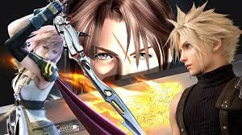
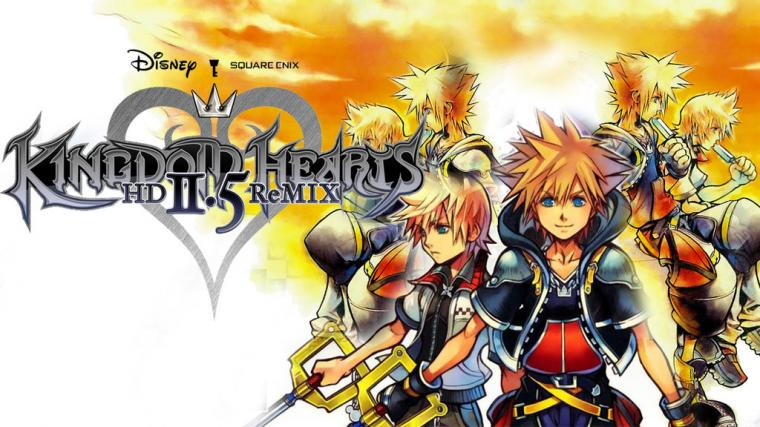
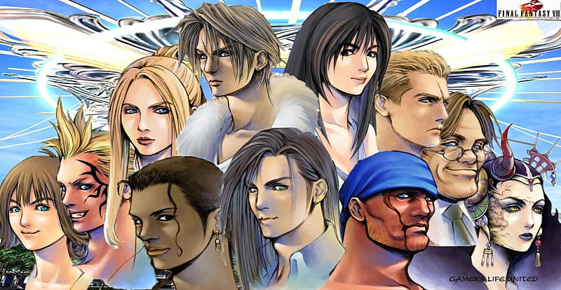
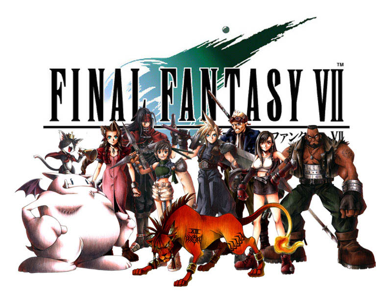

The following is an introduction to the content being presented by this website
FINAL FANTASY SERIES
Final Fantasy is a video game franchise created by Squaresoft and now known as Square Enix. It is a Japanese Role Playing Game containing cutscenes and battle sequences that drive the story foward. It's world are based on magic and mythical creatures. Its musical composer is the legendary Nobuo Uematsu.

KINGDOM HEARTS SERIES
The Kingdom hearts series is another video game franchise created by Square Enix. It is in association with Disney and contains characters from both the Final Fantasy Franchise and Disney family of media and cartoons such as Donald Duck and Goofy who are two of the main characters in the Kingdom Hearts franchise. The composer of the music for the Kingdom Hearts series is the well respected Yoko Shimamura.

XENOSAGA
The Xenosaga series is a video game franchise created by Monolithsoft. It is a space opera consisting of futurists humanoid weapons craft and aliens. The composer of the music for the Xenosaga Series is the well respected Yuki Kaijura
JRPG MUSIC CENTRAL THE PLACE ABOUT JAPANESE VIDEO GAME MUSIC AND FAMOUS COMPOSERS
FINAL FANTASY 7 AND 8 THE GAMES THAT DEFINED JAPANESE RPG GAMES

Final Fantasy VIII story is about a world ruled by a Soceress called Edea. The main military body of the world is called Galbadia. The story involes a young man named Squall Leonhart who is part of a military organisation called Balamb Garden. This is a floating metroplis that trains military combatants to battle the soceress. The story is basically a love story that envelopes the gamer in a world of magic, wonder, exploration and musical appreciation.
The story coupled with the music presented by Nobuo Uematsu has made Final Fantasy 8 or VIII a legendary installment in the franchise, catapulting the Final Fantasy brand as one of the world most poluar video game franchises. Along with Final Fantasy 7 in which its music was compsed by Nobuo Uematsu has also created its own mark in the video game industry.

Final Fantasy VII story is about a world called Midgar, where a company called Shinra Eletrc Company is the governing body of the world. They however are involed in misdeeds of using the lifestream as a power source for their mechanical ambitions such as weaponry and robotic soldiers. The lifestream is basically in the story of Final Fantasy 7 a place where the dead go and are reborn eventually. The life stream travels through out the planet it is unseen but there are areas of the world where it is noticeable due to magical springs.
The story involves meet new people who the player interacts with and eventrually learn thier backstory and how Shinra has affected their lives. Throughout the story the party of characters are involved in battles against Shinra and ultimate against a super soldier named Sephiroth who ultimate wants to destroy the world.
Final Fantasy is one of if not the most popular Japanese Role Playing Game of all time. The legendary Nobuo Uematsu returns to compose the music, providing a nostalgic experience to fans of the original Playstation one game. Just like Final Fantasy 8 It has redefined the world of Jrpgs. There is currently a remake already release and the part two is to be released in 2024 for the Playstation 5.